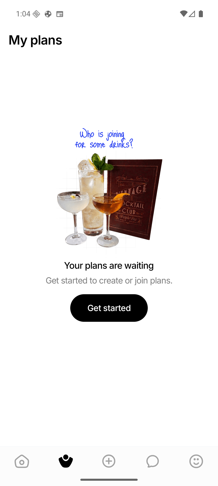
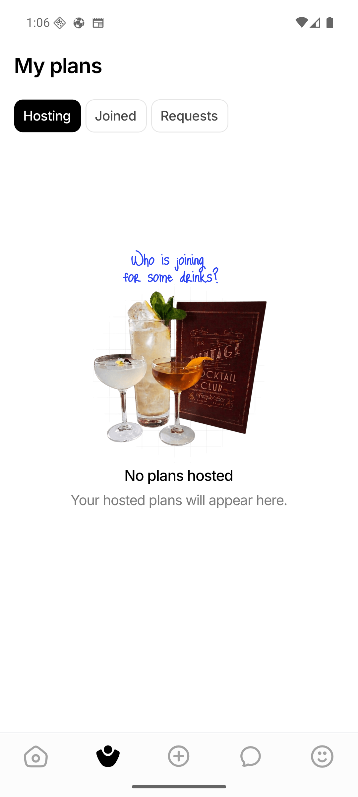
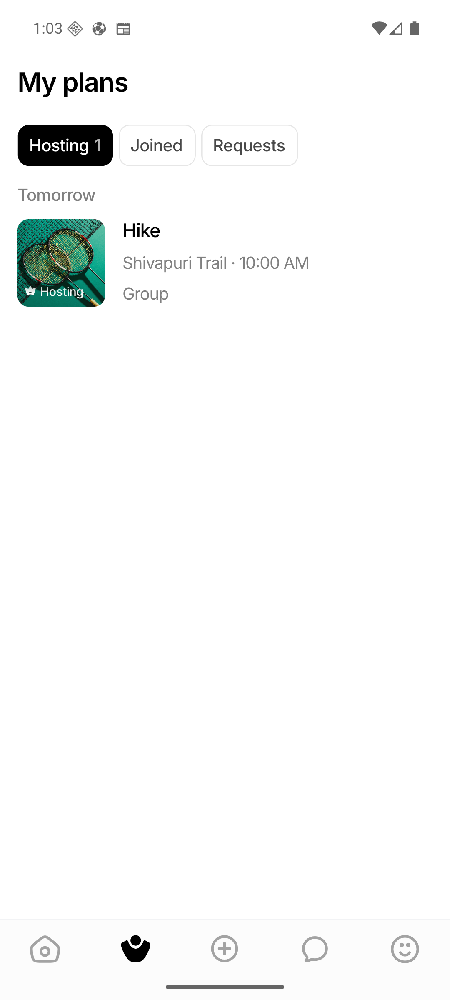

Exact, purposeful copy
Signed-out users see “Your plans are waiting” and the requested invitation to get started. Signed-in hosts see “Your hosted plans will appear here.”
Implementation report · 24 August 2026
Issue
#123
is implemented on top of ae0e49e. Empty screens use the requested copy,
initial loading and failed requests are no longer mistaken for “no plans,” and Discover
and My Plans now share one accessible loading/error component.
Signed-out users see “Your plans are waiting” and the requested invitation to get started. Signed-in hosts see “Your hosted plans will appear here.”
My Plans renders initial loading, then an uncached error with retry, then genuine tab content. Cached event lists stay visible through later refreshes and failures.
New EventListLoadState owns the spinner, accessible error icon, message,
and shared AppButton. Discover now consumes it too.
Production already used the shared separator. Stale assertions were corrected and now cover both location/time and compact audience metadata.



Shivapuri Trail · 10:00 AM on device.
Device: Android 16 emulator WEIF_API_36, 1080 × 2400. The emulator UI bridge
became unresponsive while forcing the backend-offline screenshot. No ambiguous frame is
included; the loading, error, retry, and cached-content branches are instead covered by
deterministic focused tests.
| Gate | Result | Coverage |
|---|---|---|
| Focused Jest | PASS · 5 suites / 87 tests | Shared load state, My Plans, Discover, event sections, and EventCard. |
| TypeScript | PASS | Strict frontend typecheck. |
| Lint | PASS · 0 errors | Existing repository warning baseline retained; no new error gate. |
| Formatting | PASS | Touched files plus git diff --check. |
| Android UI | PASS | Signed-out copy, signed-in Hosting copy, tabs, and populated metadata. |
Full-suite disclosure: the repository retains unrelated baseline failures in Event Details rendering, Chat Thread rendering, and create-event form date expectations. The five suites relevant to this change are green.
src/components/events/EventListLoadState.tsx
src/screens/MyEventsScreen.tsx and HomeScreen.tsx
EventListLoadState.test.tsx, My Plans rendering, event-section mapping,
and existing Discover/EventCard coverage.
Shared-component guide, AGENTS.md, and CLAUDE.md now route
event-list loading/error UI through the shared primitive.